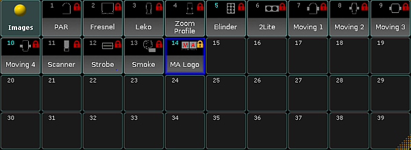

Image Pool
The grandMA2 has an image pool with predefined images, which cannot be edited.
Open the Image Pool
To open the image pool:
- Tap anywhere in the user-defined area.
- The pop-up Create Basic Window opens.
- Next, tap the tab Pools.
- Then, tap Images.
- The image pool opens.

Image pool
Images in the image pool are either marked by:
- (red padlock) symbolizes that the images are predefined.
-or-
- (orange padlock) symbolizes that the image was locked by the user. These images, however, can be unlocked.
To lock or unlock an image, use the command line.
Example:
[Channel]> Lock Image 14
Locks image 14 and displays an orange padlock within the pool object.
Usage of Images
It is possible to use the images in the grandMA2:
- In bitmap effects
- As background in layouts and assign images to objects in layouts
- As background in Desk Lock
Image Options
To open the options of the image pool, tap  in the upper left corner of the pool.
in the upper left corner of the pool.
The options of the image pool generally behave the same as in the most pools. Hence, see adjust pool options.